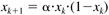
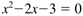

M1.8 m-Files
Thus far we have shown the interactive features of MATLAB by entering one command at a time. One reason that MATLAB is powerful is that it is a language, and programs of MATLAB code can be saved for later use. There are two ways of generating your own MATLAB code: script files and function routines.
Script Files
A script file is simply a sequence of commands that could have been entered interactively in the MATLAB command window. When the sequence is long or must be performed a number of times, it is much easier to generate a script file.
The following example is for the so-called quadratic map (population model)

where xk represents the value of the population (dimensionless) at the kth time step. We have titled the file popmod.m. Use the MATLAB text editor to generate this file and save it in a working directory as popmod.m.
% popmod.m
% population model, script file example
%
clear x,k
n = input('input final time step ');
alpha = input('input alpha ');
xinit = input('input initial population ');
x(1) = xinit;
time(1)= 0;
for k = 2:n+1;
time(k) = k-1;
x(k) = alpha*x(k-1)*(1-x(k-1));
end
plot(time,x)
% end of script file example
Notice that we have used the MATLAB input function to prompt the user for data. Also note that a percent sign (%) may be used to put comments in a script or function file. Any text after a % is ignored by the program.
The file is run by simply entering
» popmod
in the MATLAB command window.
Function Routines
A more powerful way of solving problems is to write MATLAB function routines. Function routines are similar to subroutines in FORTRAN. Consider the previous example.
function [time,x] = pmod(alpha,xinit,n)
% population model example, pmod.m
clear time; clear x; clear k;
x(1) = xinit;
time(1)= 0;
for k = 2:n+1;
time(k) = k-1;
x(k) = alpha*x(k-1)*(1-x(k-1));
end
% end of function file example
where we generate and save a file titled pmod.m. We can now "run" this function routine (using alpha = 2.8, xinit = 0.1, n = 30) by typing the following in the MATLAB command window:
» [tstep,xpop]=pmod(2.8,0.1,30);
» plot(tstep,xpop)
This function routine can also be called by other function routines. This feature leads to "structured programming"; structured programs are easy to follow and debug.
Commonly Used MATLAB Functions
MATLAB has many built-in function routines that you will use throughout this text. The most commonly used routines are fzero, fsolve, and ode45, used to solve a single nonlinear algebraic equation, multiple nonlinear algebraic equations, and a set of nonlinear differential equations, respectively. The optimization toolbox is required to use fzero and fsolve.
Single Nonlinear Algebraic Equation
fzero is used to solve a single nonlinear algebraic equation. As an example, consider

The first step is to generate a function file, which we will call fcn (any name can be used). For this simple example, the function file can consist of two lines,
function y = fcn(x)
y = x^2 - 2*x -3;
and can be saved as fcn.m. The user must enter the following command in the command window, where 0 is the initial guess. Notice that fzero calls the fcn routine, using an initial guess for the solution,
» y = fzero(@fcn,0)
and the following answer is returned
y = -1
We know that there will be two solutions, since this is a quadratic equation. Indeed, an initial guess of x = 2 yields the following result:
» y = fzero(@fcn,2)
y = 3.0000
Since the function is a polynomial, we can use a function developed for polynomial solutions. The MATLAB function roots finds the solution to the quadratic equation, using
» roots([1 -2 -3])
ans =
3
-1
which yields the two solutions expected.
|